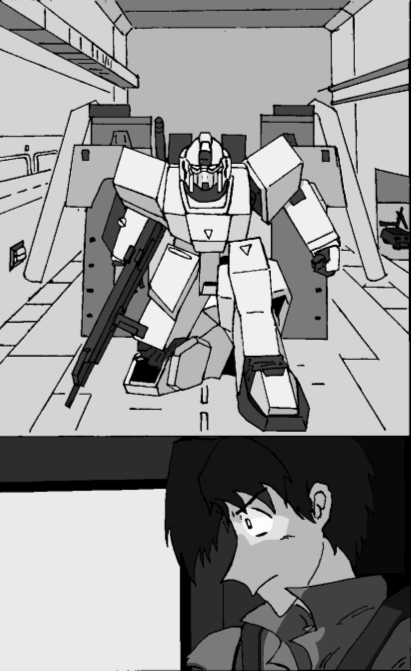

「ついに・・・・・・ついに完成したぞ・・・・・・」戻る
パソコンデスクの前で、一人の男がゆらりと立ち上がった。そのやつれ気味の顔に、満面の笑みを浮かべて。
「これこそ、私の肉の肉。私の骨の骨。
これをこそ、「ナデシコ」と呼ぼう。
まさに、私の血からとられたものなのだから」
そして男は、薄暗い部屋の中でひとり、高笑いをはじめた。
パソコンのモニターには、「NADESICO」の文字が点滅しては消え、点滅しては消えていた。
誰かに助けを求めるように・・・・・・
機動妖精撫子
作：TRACE
人類がその増えすぎた人口を母なる星から宇宙に移住させてから、1世紀近くが経っていた。
人々は母なる星の遥か高く空に居住地「コスモアーク（宇宙の箱舟）」を建造し、新たな宇宙への進出への足がかりとした。
しかし、母なる星「国際統合政府」の怠慢により、箱舟は“新たなる地”を見つけることが出来ないまま、増え続ける人口を受け入れるだけの“容器”に成り下がった。それでも人々はそこで暮らし、子孫を育み、命を繋いでいった。
宇宙暦100年。
月の裏側に位置するラグランジェ・ポイント（地球と月の重力がつりあう安定した地点）L2、コスモアーク群の独立宣言をきっかけに、かねてより統合政府に不満を持っていた地方の政府が同調して一斉に蜂起、地球規模の戦争が始まった。
「第三次アーク大戦」の勃発である。
地球・宇宙を問わず、戦闘は至る所で繰り広げられ、多くの命が失われた。
互いにどちらが優勢かもわからないまま戦況は泥沼と貸し、2年の歳月が過ぎ去った。
しかし102年1月。
統合政府軍は一台反攻作戦を展開し、反統合同盟“コスモ”軍最大の拠点、地中海のエディルネを奪回、再び戦局は動き出した。
また、各地の反統合同盟が建設した国家が、理想を掲げただけの単なる軍事政府に過ぎなかったことも大きかった。「支配からの開放」という崇高な理念は組織の中に埋没し、あとに残ったのは支配欲に溺れた軍事独裁政権だけだったのである。混乱の中で治安も大いに乱れ、人々は反統合同盟に見切りをつけ始めた。
102年9月。
総合的な戦局が統合に傾きつつあるこの頃、未だ激戦地の東南アジア地区。
そこに一人の若手士官が配属されるところから物語は始まる。
これは歴史の陰に姿を消すことになる、男たちと女たちの熱き戦いの日々を綴ったドラマである・・・・・・。
1．TAKE OFF NADESICO
嵐の中に咲く花
一機の飛行機が飛んでいる。旅客機ではない。空軍の輸送船だ。それは黒い船体に記された「Ⅰ．Ｎ．Ｓ．Ｆ．」のロゴが示している。
統合政府空軍。Integrated．Nations．Air．Force．の意である。「コウサカ＝クスト中尉、入ります」
ドアをノックし、二人の青年士官が奥の部屋へと足を踏み入れた。
部屋で二人を出迎えたのは、銀色の髪をした大佐だった。年齢は40代後半、働き盛りの年頃だ。それはたくましい光を放つ彼の眼光にも現れている。
彼は手にしていた軍内報を閉じ、入ってきた士官二人を机を挟んで見上げた。
「ご苦労、アルバート＝ギアナ中尉。コウサカ＝クスト少尉」
「中尉です」
「は？」
「本日付を持って、わたくしコウサカ＝クストは中尉に昇進致しました」
クストと名乗った士官の口調には、若干得意げな響きもあった。本人はしきりに隠しているのだろうが。
（若いな）
ふと、そう思う。
「おいクスト、でも先任中尉は俺だからな」
「わかってるってギアナ」
「まぁ二人とも。さて、ご存知の通り私は東亜方面軍第5飛行連隊大隊長のクボタだ。君たちがこれから赴任する第105独立小隊について簡単に紹介しておこう」
言いながらクボタ大佐は、改めて二人の青年士官を見つめた。
コウサカ中尉の方は、文字通りまじめそうな青年だ。引き締まった顔立ちは確かに若々しさがあふれている。一方のギアナ中尉、さっきのやり取りからもわかったが、どこか抜けていて不真面目そうである。もっとも、実際の戦場では話は別だろう。
「第105独立小隊は、早い話テスト部隊だ。君たちは試作型の戦闘航空機・テンペストのテストパイロットとして選ばれたと聞いている」
「戦闘機？俺たち、いや自分らはトルーパーのパイロットですよ？」
「詳しいことは私も知らん。君たちの直接の上官、マゼンタ技術大尉に直接訊いてくれ」
クボタ大佐が投げやり気味に答えたちょうどその時、
「大佐、失礼します」
一人の下士官が割り入ってきた。
「伍長、どうした？」
「救難信号を補足しました。本艦からの距離、およそ200」
「やけに近いな。詳しく状況を知りたい。コクピットへ」
クボタ大佐は二人の中尉を引き連れ、輸送船のコクピットに向かった。コクピットのレーダーに、一つの光点が点滅している。識別信号は敵側、コスモ同盟軍側だが、救難信号を発信している。
「どうします？」
機長はクボタに尋ねたつもりだった。だが答えたのは、
「俺のナイヴスは出せるか？」
答えたのはクスト中尉だった。
「え？ああ、少尉の機体ならいつでも・・・・・・」
「中尉ですってば！」
クストは声を張り上げると、一目散に身を翻した。
「おいクスト！何すんのよ？」
「敵だからって、放っておけるか！それに俺のナイヴスなら飛べます」
振り返り際に答え、そのままクストは格納庫に走り出してしまった。
「アイツ、以前の部隊でも仕事熱心だったからなぁ」
ギアナがため息がちにもらす。
そんな様子を横目に見ながら、クボタは感心とも呆れとも取れるため息を漏らすのだった。
「やれやれ。厄介な部隊になりそうだな、105グレイフォックス・・・・・・」
薄暗い格納庫で、クストは視界に2体の巨人を捉えていた。それは単なる芸術品でも、未知の生物でもない。
タクティカル・トルーパー。
今回の大戦から、統合・コスモ同盟両軍で使われ始めた主力兵器である。全長13メートルの巨体に、50ミリの巨大な弾頭を徹甲弾とする巨大なマシンガンを火器として使いこなす鋼鉄の巨人。それは陸上では戦車を上回る移動速度と運動性を発揮し、無重力の宇宙空間では宇宙戦闘機を歯牙にかけぬ運動性と攻撃力を見せつける。
トルーパーの代名詞でもある機体、T‐03ジップは統合・コスモ同盟両軍で大量に使われている機体だ。もっとも元々開発したのはコスモ軍の方で、統合軍は捕獲したジップを元にレプリカ生産したものを使用している。顔に当たる部位にのぺっと貼り付けられたようなカメラセンサーがいかにも無骨な一つ目巨人といった趣で、一切無駄を省いたような円筒と直方体で形成されたボディが兵器らしさをいっそう強調している。
だがクストが乗るのはこのジップではない。その隣で腰を下ろしている機体、XTM‐01ナイヴスだ。
このXTM‐01ナイヴスはジップと異なり、人間のような二つ目のカメラセンサーを有している。そのため、騎士や鎧武者のような雰囲気がある。統合軍が独自の技術で作った初の量産機で、その性能は現行のトルーパーの中では最高水準である。
そのナイヴスは、背中に異様に大きな円筒形の物体を二つ背負っている。ナイヴス用に用意されたオプション装備の大型ローターで、2枚のプロペラとジェットエンジンでナイヴスを飛行可能にするものである。元々トルーパーの飛行能力は無に等しい。背中にジャンプ補助用のロケットエンジンを積んでいる機体が殆どだが、空戦能力は到底戦闘機や戦闘ヘリの足元にも及ばない。実際この大型ローターを装備しても、機動性は戦闘機に遠く及ばないのだ。無論、並みのトルーパーよりはよっぽど機動性は高くなるが。
クストはスロープをつたって、ナイヴスの胸部に設置されたコクピットに滑り込んだ。コクピットはトルーパーの重心付近である胴体に設置されることが殆どだ。すでに自機の主動力は入っている。あとは待機状態になっている出力を上げるだけだ。
コクピットのハッチが閉ざされ、ブンッ、と重低音を発してコクピット周辺のモニターに周囲の映像が映し出される。防弾のため、トルーパーのコクピットに窓はない。トルーパーの頭部に設置されたメインカメラからの映像に機体各所のサブカメラやセンサーからの情報を、コンピューターが合成してモニターに映し出すシステムだ。左右のモニターには補助的な情報を映し出すこともできる。
操縦はシートの前から突き出した操縦桿が2本、シート下のペダル、脇のスロットルレバーをメインに、後はコンソールパネルのスイッチを必要に応じて操るようになっている。姿勢制御や歩く、走るといった基本的な動作はOSにプログラムしてあり、後は各々のパイロットに応じて動作設定は微妙に異なっている。OS上で手動操作すれば、ミリコンマ単位での微調整も可能だ。
クストは操縦桿を握る感触を確かめていると、ふと、頭にある事がよぎった。
（コイツでの出撃は、これが最後か）
想いを振り切るように、操縦桿を傾けてナイヴスの手を伸ばし、隔壁に固定されたプラズマランチャーをつかむ。何故かはわからないが、通常の54ミリ実弾ライフルを使う気にはならなかった。
格納庫のハッチが開かれ、青空が次第に広がっていく。
メインエンジン出力臨海。機体固定用ロック、解除。
「コウサカ少尉、発進どうぞ」
オペレーターからの通信がコクピットに響く。しかも、相変わらず「少尉」呼ばわりである。
「だからぁ・・・・・・もういい、コウサカ＝クスト、ナイヴス、出ます！」
語尾を強くすると同時にペダルを踏み込み、ナイヴスの20トン近い巨体が宙に躍り出た。
モニターの光景が鉄の壁から青空に変わる。クストはスロットルレバーに手をかけ、ナイヴス背後のローターを安定させた。
と、コクピットに響き渡る警告音。
「敵？」
レーダーに新たな機影が現れた。識別信号は、救難信号を発している機影と同じコスモ軍の物だ。おそらく相手も救難信号をキャッチし、救援に来たのだろう。しかも、機影の移動速度は速い。
「戦闘機か・・・・・・ヤバイな」
いくらこちらのナイヴスが飛べるといっても、戦闘機相手ではハエも同然だ。
バーニアをふかして機体を空中で待機させ、モニターの照準機を呼び出す。プラズマランチャー射程内。だがそれは相手も同じはずだ。にもかかわらず撃って来ないのは、おそらくこちらの出方を窺っているのだろう。
照準を示す十字が一点で止まった。ロックオン。それに応じて、ナイヴスはランチャーの銃口を正面に向ける。さらに銃身を安定させるため、左手を銃身脇のサブグリップにそえる。
「よーし、動くなよ。そのまま、そのまま・・・・・・」
だが、クストはわざと銃身をそらして操縦桿のトリガーを引いた。
ナイヴスの構えたプラズマランチャーの銃身から、まばゆい光の帯がほとばしった。
プラズマランチャー。それは超高熱の熱源体を、ビームよろしく射出する銃器である。実弾とは比べ物にならない破壊力と弾速を誇る強力な兵器だ。もっとも、通常弾頭とは異なり連射が不可能な上、生産コストがかさむという欠点もあり、一長一短といった所だ。
そのプラズマランチャーが狙った先は相手の戦闘機コクピット――ではなく、その右側の、何も無い空間だった。
「外れた？いや、外したのか」
一方の戦闘機のパイロットは、相手の第一撃がわざと外したことを悟っていた。だが応戦しようとせず、黙ってレーダーを見つめていた。
「さて、どうするか・・・・・・」
そうつぶやいた矢先、通信が飛び込んできた。
「こちらへイト。・・・・・・ブランド少佐ですか。・・・・・・は？いいのでありますか？・・・・・・“アレ”を、起動するのですか？・・・・・・は、了解しました」
パイロットは鷹揚にうなずき、自機の機首を反転させた。
交点が向きを変え、レーダーの外側に離れていく。
「よーし、いい子だ」
クストはつぶやき、再びモニターを通常時に戻した。
ベテランパイロットほど、無駄な戦いは避けるものだ。相手は戦闘に伴うリスクを嫌ったのだ。もし本気で向かってきたら、はっきり言って危なかった。クストは決してベテランではないのだ。
例の救難信号を発している機体は、先程からずっと同じ地点にいる。機体のトラブルで動けなくなったのか、それともナビゲーターがいかれて道に迷っているのか。どちらにしても、早く相手の姿を確認しなくては。
しかし目的地まで自機を進めたところで、クストは一瞬目を疑った。
「アキレウス・・・・・・」
そこにいた機体は、自分たちの統合軍が開発した機体、XTX‐02T00Xアキレウスだったのである。全身を白く塗装した（錆止めの可能性もあるが）外見からは優雅なイメージも漂っているが、右手に構える大型のライフルと背中の異様に大きなバーニアパックがその優雅さを台無しにしていた。実際、機体バランスが悪すぎて、数機の実験機が製造された段階で開発中止になったとクストは聞いていた。
しかし、識別信号は敵軍の物だ。
（捕獲された機体か）
クストはあまり深く考え込まないことにした。
そして通信を入れる。汎用周波数。繋がるはずだ。
「そこのアキレウス、聞こえるか。損傷はないようだな・・・・・・。俺の輸送機に誘導する。ついてきてくれ」
返事は無い。
その代わり、アキレウスのバイザーのようなカメラセンサーが赤々と光った気がした。
「誰カ・・・・・・助ケテ・・・・・・助ケテ・・・・・・」
「！？」
そのとき、クストは誰かの声を聴いた。
いや、通信機は何の反応も示していない。そもそも、“聞いた”というより、“頭の中に閃いた”と言った方が正しいような、不思議な感覚だった。
（気のせいか）
そう思ったクストに、いきなり答えが返ってきた。
後方警戒音。ロックオンされたことを示す音だ。
「まさか！？」
予感は当たった。自分のナイヴスに狙いをつけていたのは、他ならぬ白い機体だ。
反射的に操縦桿を引き絞る。刹那、たった今まで自分がいた地点を弾丸が貫いていった。
「騙し討ちか！」
しかしクストは特に慌てない。敵が救難信号を発している、そう聞いたときから薄々は察していた。
アキレウスは背中の巨大なエンジンの塊から炎を噴射し、重力など無いかのように飛翔して迫ってくる。すぐにクストも後退し、足元のペダルを踏み込んだ。急に減速した勢いで、クストの身体に負の重力が襲い掛かり、押し潰されそうになる。だがそれは相手も同じはずだ。うまくすれば重力の負荷に負けて、無防備な姿をさらしているはずだ。
だがその確証は、あっさりと裏切られた。
すでに白い機体は体勢を整え、自分のナイヴスに銃口を向けている。パイロットはクストが感じた以上のGに身体が押し潰されそうになったはずだ。となると、よほど耐G能力の優れた人間が操縦しているのか、それとも・・・・・・
「無人機？」
それしか考えられない。どんなに強靭な肉体を持った人間でも、ある程度Gを受けると眼球への血流が滞り、一時的に視界が失われてしまうのだ。専門的にはブラックアウト、さらに悪化するとレッドアウトという命に関わる症状に至る。
しかし現状では「無人のトルーパーは開発不可能」と専門家の見解は一致している。人型という臨機応変性の高い形状ゆえに、コンピューターのプログラムのように決まった動作だけをこなすシステムには根本的に向かない機械なのである。
ちなみに外部からの遠隔操作は戦場という臨機応変な状況を把握しにくいため、開発対象とはなっていない。ラジコンにカメラを付けて、そのカメラの映像だけを当てにして飛び回らせるのがいかに危険な行為か、想像していただければ分かるだろう。
しかし現に、目の前には無人機としか思えない機体が飛び回っている。となると、よほど精密かつ膨大なプログラムを組み込んでいるのか、それとも、あの白い機体そのものが人間のように“考える”ことができる、“意思”を持った存在なのか・・・・・・
（そんな馬鹿な）
己の考えを打ち消し、クストは再びトリガーを引いた。
コウサカ＝クスト中尉が輸送船から出撃する十数分前。
“コスモ軍の”アキレウスが発した救難信号は、クストたちの目的地であるオーディス基地でも補足していた。
「大尉」
基地のレーダーに見入っていた女性下士官が後ろの上官に振り向く。
「コマツ軍曹、アキレウスに間違いないのだな？」
上官の名はイースト＝マゼンタ技術大尉。クストたちの上官となる人物である。年齢的には30代そこそこなのだろうが、ボサボサの髪と丸眼鏡といった容貌が、軍人というよりは科学者といった風情を醸し出している。実際技術士官なのだから、職業相応の容貌なのかもしれないが。
「はい。識別信号はコスモ軍のものですが・・・・・・」
下士官の声に、マゼンタ技術大尉の眉間がしわを寄せる。
「ということは、やはり例の・・・・・・」
「は？」
「軍曹、確かテンペストは電子戦用の3号機が出せたな？」
「え？ええ、3号機は整備が完了しています。けど、パイロットのケイツ曹長は今日は非番ですよ？」
「む、使えないヤツ。仕方ない。ユイ、お前さんが3号機に乗れ」
「私が！？」
困惑する下士官を気にも留めず、マゼンタは続けた。
「俺も一緒に行く。放っておく訳にはいかないのだ。例の機体ならば、な」
「しかし大尉、通信業務は・・・・・・」
「そんなものはロップ伍長に任せておけ。行くぞ軍曹。例の機体、間違いなく“アレ”を・・・・・・」
何か物含みのある発言を残し、二人は基地格納庫へと足を進めた。
「くそっ！」
クストは毒気づき、ランチャーを左手に持ち替えた。先程から何度も撃っているが、相手の白い機体は難なくかわすのだ。こちらの動きが全て見えているかのように。
操縦桿を操って自機の右手を背中に回し、鞘に収めたトルーパー専用の巨大剣、メタルソードを抜く。
「格闘戦しかない！」
スロットルレバーを一気に押しやり、体当たり覚悟で目の前の白い機体に一気に接近する。
一閃。
しかしアキレウスの左手がナイヴスの右腕を受け止めた。
「助ケテ・・・・・・」
「なに！？」
またあの幻聴が聞こえた。
しかしクストが躊躇した一瞬の隙に、目の前の白い機体は再び間合いをとった。
そのとき、白い機体の後方から二条の光芒がほとばしった。この青みを帯びた光はプラズマ波のビームだ。
「コウサカ中尉、聞こえるか！？」
さらに通信。汎用回線ではない。統合軍専用の周波数だ。しかも、ちゃんと「中尉」呼ばわりしてくれた。口元の笑みを必死に隠す。
「はいっ！」
「こちらはオーディス基地のマゼンタだ。今からお前さんを支援する」
しかしクストに持ちかけられた話は、とても支援と呼べるものではない無理難題だった。
「あの白い機体、何としても捕獲しろ！」
「はぁ！？」
「いいか、生け捕りにしろ。奴のコクピットはぶっ壊しても構わん。だが、絶対に頭部だけは傷付けるなよ」
「んなムチャな！」
弱音も吐きたくなる。攻撃が掠りもしない相手を捕獲するなど、無茶も甚だしい。
その気持ちを察してか、通信は付け加えてくる。
「いいか、XTM‐02T00Xアキレウスは超人的な機動力を発揮する機体だが、度を越えた重力加速度のせいで、機体に多大な負担がかかっている。特に脚部関節の磨耗が著しいのだ。そこで、狙うなら・・・・・・」
「脚、ヲ・・・・・・」
「なに！？」
今の声は通信ではなかった。あの幻聴が、そう告げたのだ。
「脚、か・・・・・・」
通信でマゼンタが言っていた通り、アキレウスは度を越えた機動性のあまり着陸・離陸時に脚部関節に尋常ではない負担をかけ、損耗率を著しく高めていたのだ。まさにギリシア神話に出てくる無敵の英雄アキレウスの通り、アキレス腱が弱点という訳だ。
不意に、白い機体の動きが止まった。
チャンスは今しかない。クストは迷わずトリガーを引いた。狙いは白い機体のスネ、アキレス腱。
数万度のプラズマ波が光の軌跡を描き、アキレウスの左脚スネを見事射抜いた。
「やっ、た・・・・・・」
だがまだ油断はできない。相手が捨て身の一撃を放ってくる可能性は大いにある。
しかしクストに向かって放たれたのは、またしても囁いた幻聴だった。
「アリガトウ、くすとサン」
幻聴は不意に止んだ。代わりに、モニターに広がる閃光。
「自爆！？」
クストは一瞬で事情を悟った。白い機体、コスモ軍のアキレウスは自爆したのだ。スネを破壊された程度で誘爆したとは考えられない。機体に残っていたデータの機密保持か。
「しかし、あの声は・・・・・・？」
声・・・・・・と言っていいかさえ判然としないが、あの“声”は、女性のものだった。助ケテ。何を助けるというのか。アリガトウ。いったい何に感謝していたのか。
墜落して炎を燻らせ、みるみる白さを失っていくアキレウスをコクピットのモニターで見つめながら、クストはただ思案に暮れるだけだった。
それから間もなくアキレウスの残骸はオーディス基地の兵士たちによって回収され、クストのナイヴスも退避していた輸送船に戻っていった。輸送船は退避しているうちに燃料が底をついたため、今日は別の基地で翼を休めるという。乗っていたクストやギアナのオーディス基地への赴任も、一日先送りとなった。
その夜、オーディス基地一角にこしらえられた、小さな研究室にて。
「ユイ、回収したOSはどうだったか？」
パソコンデスクに向かい合っていた女性下士官に、マゼンタ技術大尉が声を掛けた。
「はい、回収は成功です。メインコンピューター、OSともほぼ完全な形で残っていました」
振り返って答えた女性下士官、コマツ＝ユイ軍曹の言葉に、マゼンタの眉間にしわが寄る。何か思い当たる節でもあるのだろうか。
「やはりな・・・・・・システムがそれを望んだのだろう」
「システムが・・・・・・ですか？」
コマツ軍曹の声には答えず、マゼンタはふと独り言をつぶやいた。
「あのナイヴスのパイロットは、ここに赴任してくるコウサカ中尉だったな。1号機にこのシステムを入れて、彼に任せてみるか」
「どうしたのですか、大尉？」
「ん？いや、気にしないでくれ」
マゼンタはその場しのぎか、ボサボサの髪をかきむしった。
そして、パソコンのモニターに目をやって、そこに表示されている文字を読み上げた。
「Neo
Absolute
Developed
Evolve
Synthesis
Innovating
Converting
Operator
『ナデシコ』・・・・・・それが、このシステムの名だ」
※ ※ ※
コウサカ＝クスト少尉「中尉だって言ってるでしょ！」失礼、中尉たち一行は、一日遅れの早朝、統合軍東亜基地、オーディスに到着した。
オーディス基地はベトナム地方政府が管轄している地域に位置する基地だ。すぐ近くのシンガポール周辺の採掘拠点がコスモ同盟軍の占領地区となっており、戦略的にも重要な地区だ。
イースト＝マゼンタ技術大尉が、目の前に居並んだ第105独立小隊を見渡す。ちなみに誰も敬礼していない。
その真ん中にいるのが、本日付で赴任したクストとギアナである。
小隊の編成は5人。先任の隊員として、クストの隣にちゃっかり陣取った多分に幼い印象の女性下士官がミィ＝ケイツ曹長。そしてギアナの隣にいる弱気そうな青年がこの部隊の使われ役（？）ロップ伍長。そしてコマツ＝ユイ軍曹、コウサカ中尉、ギアナ中尉を加えて、小隊編成の5人だ。
「おい、ミィ。何ボーっとしてる」
「え？あ、ごめんなさい。だってクスト中尉、あまりに私のタイプなもので」
「赴任早々モテモテだねぇ、クストくん」
「別に俺はそういう訳じゃ・・・・・・」
とても軍人どうしのものとは思えない会話だ。
「ところでマゼンタ大尉、早速質問があるんだがね」
ギアナが早々と口火を切った。
「何で俺とクストが、こんな実験小隊に配属になったんだ？」
「ちょうどいい実力だったからだ」
マゼンタはあっさり答えた。しかし、ギアナとクストにはその意味はよく分からなかったらしい。
「つまり、足手まといになる訳でもなければ、最前線から捻出するのが勿体無いほどのエースストライカーでもなし。早い話、お前さんたちが“普通”だから、引っこ抜いたのだ」
「それって褒めてるのかい？けなしてるのかい？」
「どちらにとってもらっても構わん」
相手にするのも面倒臭いといった具合に、マゼンタは単刀直入に言った。
「マゼンタ大尉。俺たちの乗る戦闘機・・・・・・テンペストか？わざわざ実験するほどの機体なのか？」
そのクストの言葉に、マゼンタの顔が真面目になった。
「そうだな。まぁ、直接見た方が早いだろう。軍曹、1号機の調整は済んでいるか？」
「はい、先ほど。ですが、大型ヒートソードの方はまだ・・・・・・」
それを聞くなり、マゼンタは基地格納庫の方へと歩き出した。慌ててクストたちも後を追う。
「大尉？」
「本体の調整が済んでいればいい。本体さえ、動けばな」
その口元は意味ありげにほんの少しだけ歪んでいた。
マゼンタが着いた先の格納庫で、彼女は翼を休めていた。
XTF‐05テンペスト。
「コイツが、テンペストか・・・・・・」
クストは目の前の彼女を見て、ただ当たり前のことをつぶやいていた。
全体的な外観は統合軍の主力戦闘機、XF‐14ミーティアとそう変わらない普通の飛行機だが、搭載している武装には天と地ほどの差があった。
機首に24ミリ機銃2門。左右の主翼付け根に160ミリ径5連装ミサイルランチャー。胴体前面には40ミリプラズマランチャー2門。そして、胴体下面には54ミリの実弾ライフルまで装備している。凄まじい重武装だ。主翼にはさらに魚雷や対艦ミサイルなどのオプション武装が装備できるらしい。
それに、戦闘機には不釣合いな武装が胴体背面に装備されている。まさに巨大剣そのものを背負っているのだ。
「何でトルーパー用のメタルソードが・・・・・・」
しかしその問いにはマゼンタは答えず、クストの方を振り向き、ただこう尋ねた。
「中尉、乗ってみるか？」
基地上空で、戦闘機テンペスト1号機は快調に飛び回っていた。
コクピットに収まっているのは、コウサカ＝クスト中尉。パイロットスーツに身を包み、操縦桿を両手で握りしめている。少し機体をひねって下を見下ろせば、テンペストの3号機が基地の滑走路に出されているのが見える。各種機器を3号機のレーダーに繋いで、1号機の運用データを回収しているのだ。その周辺にマゼンタやギアナもいるはずだが、この高度からでは点にしか見えない。
「クスト中尉、乗り心地はいかがですか？」
通信機から聞こえてきたミィ＝ケイツ曹長の快活な声に、クストはやはり快活に返した。
「いい調子だよ。まるで昔から使ってたみたいに良く馴染む」
それも当然だった。テンペストのコクピットの計器配置や操縦法は、今までクストの乗り慣れていたトルーパーのものと実に良く似ている。
（だから、トルーパー乗りの俺やギアナでも良かった訳か）
キャノピー全面を囲う大空を見上げながら、クストはぼんやりとそんな事を考えたりもした。こんな事は戦闘中ではとても考える余裕はないだろう。ある意味、空を飛ぶ感覚を味わえる甘美なひとときだ。
だが、その甘美な時間は呆気なく打ち砕かれた。
警戒音が狂ったように唸りを上げ、レーダーに幾つもの光点が現れる。
「嘘だろ！？」
こんなときに限って、敵。それもかなりの数だ。
「中尉！敵戦力多数、早く離脱を！！」
その声の主はコマツ軍曹だ。先ほどから3号機のセンサーで1号機の各種データを集めている。3号機の索敵用大型レーダーでも敵影を補足したのだろう。
「分かってるよ！でもたった一機じゃ・・・・・・」
とっさにクストは計器を確認した。一応プラズマランチャーのエネルギーも、弾薬も十分にある。牽制用には何とか事欠かなさそうだ。
一方、下の方でも大騒ぎだった。
「おい大尉さんよ！さっさと援護に向かわなきゃマズイだろ！！テンペストは3機あるんだろ！？」
「無茶言うな。2号機は調整に手間取って、組みあがってない。3号機はここのレーダーに繋いだままだろうが」
「でも、このままじゃクストは墜とされるぞ！」
食って掛かるギアナを制したマゼンタはやけに冷静だった。
「ただ重武装で操縦系がトルーパーに似通っているだけなら、実験小隊でわざわざ試験などしない。俺の設計したテンペストは、特別な機体なんだ。もっともあの１号機には、もっと特別な頭脳が組み込まれてるがな」
やけに説明ぶった口調だった。
ややあって、通信機に別の通信が飛び込んできた。応じたロップ伍長が叫ぶ。
「大尉！支援です。ちょうど偵察飛行中の103小隊が、支援に向かってくれるようです！」
「よし、中尉の機体にも回せ。その前に全部墜とすだろうがな」
またもや意味ありげな台詞を吐くマゼンタだったが、誰もそれに気付かなかった。テンペストに支援の旨を伝える通信が回ってきたのは、それから間もなくだった。
「105実験機、聞こえるか。こちら103飛行小隊、グエン＝ワンス。ミーティアで支援に向かう。持ちこたえてくれ」
その声には聞き覚えがあった。たまらず通信機に向かって叫ぶ。
「グエン？あのグエンか？俺だ、クストだ！」
「クスト？久しぶりだな！」
通信機の向こうの相手、グエン＝ワンスはクストにとって士官学校の同期生だ。二人でこっそり寮を抜け出したこともあったし、よく教官と衝突したときのなだめ役になってくれた。卒業後は別々の配属先となっただけに、実に久しぶりだった。
「待ってろ、すぐにそっちに行く」
「頼む。一人じゃ分が悪い」
応答しているあいだもクストは必死にレーダーを探っていた。すでに敵戦闘機はこちらを補足しているらしい。みるみるこちらとの距離を狭めてくる。目視できる距離になるのは時間の問題だ。
再び後方警戒音。ロックオンされたことを示す警報だ。
クストは思わず息を呑む。
背後を取られた。空中戦において敵に背後に回られたら、それは圧倒的な不利、いやそれこそ死を意味する。
必死に操縦桿を絞ってロックオンの呪縛から逃げようにも、警報は全く止まない。
（墜とされる！）
恐怖感で胸が押し潰されそうになるのを必死に耐えた。掌に汗がじっとりと滲み、額からも汗がこぼれる。今すぐにでも汗で蒸したパイロットスーツを脱いで、胸をはだけてしまいたい気分だ。
（落ち着け）
さっきから必死に自分に言い聞かせているが、それがかえって恐怖心を増幅させてしまう。
「ここまでか・・・・・・」
「ヤラセナイ・・・・・・！」
「え？」
あの幻聴だ。昨日アキレウスと対峙した時にも聞いた、あの女の声だ。そうか、これは俺が錯乱しているから聞こえる声なのか。クストは一瞬、そう理解した。
（・・・・・・いや違う！だったらなぜ、「アリガトウ」なんて声が聞こえた！？）
そう思った刹那、急に胸に衝撃が走った。先程までの恐怖心とは全く違う。何者かが自分の身体を直接揺さぶった、そんな感覚だ。
クストの目に、何かの文字が飛び込んできた。
NADESICO
その文字はコンソールパネル上のサブモニターに表示されていた。
「『ナデシコ』？」
読み上げた直後、さらに胸を締め付けるような感覚が襲ってきた。
「・・・・・・ッ！？」
何かが聞こえた。幻聴ではない女性の声が狭苦しいコクピットの中で響いた。
そして、頭の中にも。
「アナタに、力を・・・・・・」
「む！？」
何かを察したのか、マゼンタが3号機のコクピットによじ登った。
「大尉、どうしたってんだよ！？」
騒然とするギアナや怪訝な顔をするユイに構わず、マゼンタはコクピットの計器を覗き込む。
「大尉？」
丸眼鏡の向こうの目が細められる。険しくなっているようにも、不敵な笑みを浮かべているようにも見える。もっとも、不気味な表情である事に変わりはないが。
「始まったぞ・・・・・・」
そのつぶやきと同時に、空を見上げていたギアナが叫びを上げた。
「お、おい！！」
その叫びに、その場の一同も大空を見上げた。テンペスト1号機が、胴体から真っ二つにへし折れた。
それをコクピットから見ていたコスモ同盟軍のパイロットが口元で笑う。
「空力抵抗に負けて自滅したか」
必死に逃げるあまり機体に過度の負担がかかったんだろう、パイロットはそう察した。
しかし真っ二つに折れたはずの相手は、まるで意思を持っているかのように何かを形作ろうとしていた。キャノピーをカバーが覆い、主翼が閉ざされ、2基のエンジンブロックが下面に伸びる。さらに、胴体から腕のような部位が現れた。それは、眠りについていた伝説の巨人を召喚する儀式だった。
「なに！？」
パイロットは我が目を疑った。戦闘機としか思えなかった目の前の機体は、トルーパーだったのだ。
戦闘機からトルーパーへと変形した目の前の機体は、明らかに彼が今まで見たことの無い機体だった。それどころか、自機に記録されている兵器データにも該当機種が無い。
背中には折りたたんだ主翼を背負い、エンジンブロックはスラリとした脚部を形成している。右手には胴体下面に設置されていた54ミリライフルを構え、本体側面から伸びた2門のプラズマランチャーは腰部に移動した。そして真っ二つに折りたたんだ胴体の隙間から現れた頭部は、まるで猛禽を思わせるような精悍な顔立ちに人間のような2つ目のカメラセンサー。
「そ、そんな複雑な機体、実戦で使えるか！」
パイロットは毒気づき、目の前の機体に照準を合わせて撃った。
彼の乗機シュミッターにもプラズマ砲は搭載している。通常弾頭より遥かに早いプラズマ波のビームを、トルーパーの皆無に等しい飛行能力では回避は無理のはずだ。
しかし彼の読みは完全に裏切られた。
トリガーを引いた時、すでに相手はそこにいなかった。虚空を超高熱のビームが無意味に貫いていく。
「どこだ、あの機体は！？」
あの機体がどこに行ったのか、彼には最後まで分からなかっただろう。
次の瞬間、超高熱の光の爪が彼の意識を跡形も無く消し去った。テンペストの左腕がシュミッターのコクピットから引き抜かれた。左腕に被さった手甲のような物からビームで形成された爪が伸びている。
プラズマストライカー。シュミッターのコクピットを一撃で貫いた格闘兵装である。
寮機を失った怒りか、他のシュミッターもテンペストに銃撃を加えてきた。
迫り来るビームを見切って全てかわし、すでにテンペストは相手の真下に回り込んでライフルを構えていた。
ゼロ距離射撃。相手は何が起こったか分からないまま54ミリの砲弾に押し潰されただろう。機体下面からとは言え、テンペストの銃撃は正確にコクピットを貫いていたのだ。
さらに背を向けた敵機を見るや否や、テンペストは再び戦闘機に変形して背後を取った。そのまま翼付け根の160ミリミサイルを発射。一発だけとは言え、またも正確にコクピットを射抜き、敵機撃墜。
「ば、化け物だ、コイツは！！」
汎用回線で思わず呻いたパイロットの一言が、その場に居合わせる者全ての気持ちを代弁していた。
そのパイロットも、次の瞬間には自機の爆炎に焼き尽くされた。「す、すげぇ・・・・・・」
それは地上から見守ることしかできなかったギアナたちも目の当たりにしていた光景だった。
テンペストを取り囲んだコスモ軍のシュミッターはあれよ、あれよという間に次々撃墜されていき、もはや2機、いや1機となった。機首のプラズマ砲が正面から向かってくるシュミッター1機のエンジンを正確に焼き尽くしたのだ。
ついに1機となったシュミッターが胴体下面から爪のような物を伸ばし、そこから光の刃を形成してテンペストに斬り掛かる。まるで翼竜が空中で獲物を捕らえるような仕草だ。
対するテンペストは捕らえられる直前、再びトルーパーに変形しその空気抵抗で急速下降、敵パイロットが驚く隙もないまま急上昇し、背中のメタルソードを抜き放って敵機を戦後真っ二つに寸断した。
「これが、テンペスト・・・・・・」
ギアナたちはただ呆然とつぶやき、大空で悠然と飛ぶテンペスト1号機を見上げた。爆発する敵機の光に映し出されたシルエットは、その驚異的な戦闘能力もあってどこか悪魔的にも見える。
その一方で、傍目にも分かるほど口元を不敵に歪めている人物もいた。
「そう、このXTF‐05テンペストはトルーパーの戦闘力と戦闘機の飛行能力との両方を同時に実現した、画期的な兵器なのだ。そしてあの1号機には、その能力を200％引き出す“力”がある・・・・・・」
あまりに意味ありげな独り言だったが、その場にいる一同はそれを聞き取る余裕も無いほど呆然と空を見上げるだけだった。
激戦をくぐり抜けたテンペスト1号機が、ゆっくりと基地の滑走路に降下してくる。
「オーライ、オーライ、オーライ」
滑走路上でギアナが誘導し、テンペストは着陸足を下ろして滑走路に擦り付けた。
しかし、まっすぐにギアナ目掛けて迫ってくる。
「オーライって・・・・・・わああっ！？」
一目散に逃げたギアナのすぐ脇を1号機が颯爽と走り抜けていく。テンペストはしばらく滑走したのち減速し、キュッ、とブレーキ音を鳴らして3号機の隣に寄り添う形で停止した。
「すごい。傷ひとつ付いてない・・・・・・」
ミィの言う通りだった。あれほどの激戦にもかかわらず1号機の外装には被弾した箇所は見当たらない。
真っ先に1号機のコクピットによじ登ったのはギアナだった。ミィがそれに続く。
高速飛行用のキャノピーカバーが後方にずれ、プシュッという空気音とともにキャノピーが開かれる。
「よ、お前いつからあんな腕前に・・・・・・」
早速コクピットを覗き込んで、口を開いたギアナだったが・・・・・・
「・・・・・・あれ？」
シートにクストの姿はなかった。
「キミ・・・・・・だれ？」
ギアナの声が奇妙な響きを帯びる。
その「だれ」とは、当たり前だがシートに座っている人物のことである。
「だれって、俺に決まってるだろ」
憮然とした返事が返ってきたが・・・・・・
「むっ！？」
その場の全員がハッとした。
慌ててミィもコクピットを覗き込む。
見ると、1号機のシートには女性が座っていた。ほんの少し長い髪をさらりとなびかせた、サッパリした顔立ちの女性だ。パイロットスーツは男物で、そのせいか若干オーバーサイズのようだ。襟元の階級章は「中尉」だった。
「ちょっとアナタ！クスト中尉をどこに隠したのよ！？」
その女性士官の胸倉を掴み、激しく揺さぶるミィ。嫉妬心も顕わな応対だ。
「ぐ、ぐるじい・・・・・・」
もっともテンペストは基本的に単座式だ。シート背面には臨時に一人を乗せることもできるが、それ以外に人が入れるスペースはない。当然、隠れようもない。
「おい、ミィ。カワイコちゃんをいじめるのはその位にしとけ」
「で、でもぉ・・・・・・」
そこにマゼンタやユイたちもよじ登ってきた。
「やはりな、データの通りだ」
「大尉、何か知ってるんですか？クスト中尉は、どこにいるんですか！？」
まくし立てるミィを無視し、マゼンタは無表情な顔で説明を始めた。
「1号機に搭載したオペレーティング・システム『ナデシコ』は、パイロットと機体の能力を通常の200％引き出す能力がある。その代償なのかは分からんが、パイロットは『ナデシコ』起動後しばらくは、その肉体は女性になってしまうのだ」
冗談のような発言内容だが、当のマゼンタにそんな様子は微塵もない。それはギアナもミィも分かっていた。マゼンタの口調は、どう考えても真面目だったのだ。
「じ、じゃあ、このカワイコちゃんは・・・・・・」
「子供じゃないんだから、文脈から判断しろ」
「そうじゃなくって、クスト中尉が・・・・・・」
「夢だ、夢だ、クストがまさか・・・・・・」
その場の面々は目の前の事態に、もはや思考がついて行っていないようだ。
しかしその元凶である女性本人は、自分の身に何が起こったのかさえまだ気付いていないらしい。
「どうしたんだ、みんな？」
素朴に目の前のユイに尋ねる。
ユイは少し戸惑ったが、少しでも当人にショックを与えないよう遠まわしに言った。
「中尉・・・・・・アナタ、自分の身体、何か変だと思いませんか？」
「は？」
と言ってから、ようやく気付いたようだ。
「派手な戦闘したからかな、やけに胸が圧迫されるような気がして・・・・・・」
もう戦闘は終わった。こんなパイロットスーツなんか脱いで、さっさと楽な格好になりたい。彼女は素直にパイロットスーツのチャックをはずし、その胸元をはだけ出した。
そして、大きく深呼吸するつもりだったのだが。
「・・・・・・はっ！？」
彼女は見た。インナーシャツを通じてやんわりと現れた、あるはずのない胸元のふくらみを。
「ま、まさか・・・・・・」
解釈することもなくぼんやりと聞き流していたマゼンタの説明が頭によぎる。
「夢だ、夢だ・・・・・・」
彼女は悪あがきするように必死に身体のあちこちを触った。
頭。髪が少し長い。それに黒髪ではなく、若干青みを帯びた銀色の髪だ。
胸。言わずもがな。女性としては小さい方だろうか？
腰。引き締まっていてスレンダーな印象がある。
股。・・・・・・・・・・・・
「うわああああああああああああっ！！」
「イヤぁぁぁぁぁぁぁぁッ！あたしのクスト中尉がぁぁぁぁぁぁぁぁッ！！」
二人は同時に叫び、そして同時に意識を失った。それが、今の彼女たちにできる唯一のことだった。
「カワイコちゃんが、クストなんて・・・・・・でも、マジでカワイイんだって・・・・・・あー、あー・・・・・・」
一方、ギアナもただ悶々とするばかり。
だが、そんな彼らとは対照的に、傍目にも分かるほどほくそ笑みを浮かべている人物が一人。
「ふふふ、これからの日々が楽しくなりそうだ・・・・・・」
※ ※ ※
宇宙暦102年9月。
欧州ドイツ地区サブハム基地において、小規模な戦闘があった。それはエディルネ大攻防戦に比べればひどく局地的なものである。しかし、この戦闘を機に実戦投入された統合軍の試作機XTX-01SCセイバークラフト3号機と、それを偶然操縦してしまった少年フジシマ＝アルトの参加が、この第三次アーク対戦の行く末を大きく左右することになるとは、この時誰が予測できたであろうか？
同じく102年9月。
東南アジア地域の統合軍某基地で、次期空軍試作機XTF‐05テンペストの運用試験が開始された。同時に新型OSの試験が開始されたとの情報もあるが、その概要は軍の公式記録には一切存在せず、その信憑性は非常に疑わしい。当時の資料を基に近日中に詳細を明らかにしたいところだが、残念ながらそれは別の機会に譲らねばならない。103年4月12日
L3アーク“ヘブンズゲート”より、終戦協定締結を祝して
統合軍兵站局総合技術研究所所属 ライト＝インパルス大尉～通信終～
お久しぶりですね。浪人決定(爆泣)のTRACEでございましてよ。
ここまで某機動戦士に設定を似せていたら、ほとんど二次創作の部類でしょうか？
まぁ、そのままではあまりTSが書けそうな世界ではありませんしね。と言うわけで、TRACEなりに考えた架空ロボット戦記と相成りました。あえて正伝ではなく外伝のノリで書き始めるところがへそ曲がりなTRACE(苦笑)。いつか正伝も何らかの形で世に出したいんですが、こちらはTSネタと全く無関係だからなぁ。と言いつつ、TRACEの処女作(ダブルミーニング！)GENTLEGIRLの細部にほんの少しだけ出てたりして。
せっかく趣味と文庫を合体させた作品なので、できれば連作にしたいです。その為にわざわざ伏線も引いておいたけど、ちょっと不安。ちなみに冒頭の台詞は旧約聖書にて「イブ」が創造されたときのアダムの台詞を文字った物だったりします。聖書ネタは結構使えて面白いですね。
ちなみに主役機テンペストの画稿も既にクリンナップしてるのですが、まずは世界観を伝えるイラストを、と考え、あえて量産機のナイヴスにご登場頂きました。テンペストのデザインにはVF-1(フォッカー専用機)の変形モデル(●ンプレストのプライズ景品。結構イイ出来なので肩関節にジョイントを仕込んで改造しちゃいました)をガチャガチャいじくり回して考えてたりします。ま、主役機の紹介は第２話が執筆できたら、って事で。悲しいけどこれ、戦争ですもんね（？）
□ 感想はこちらに □